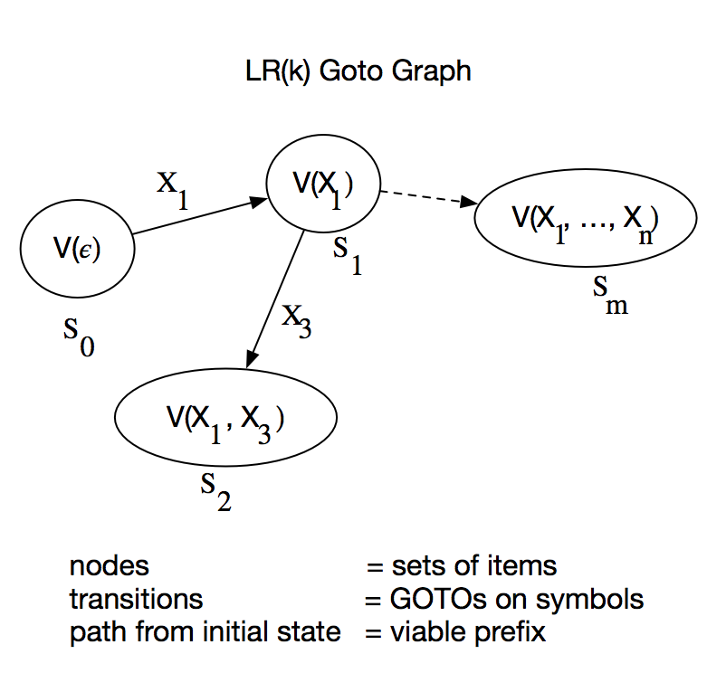
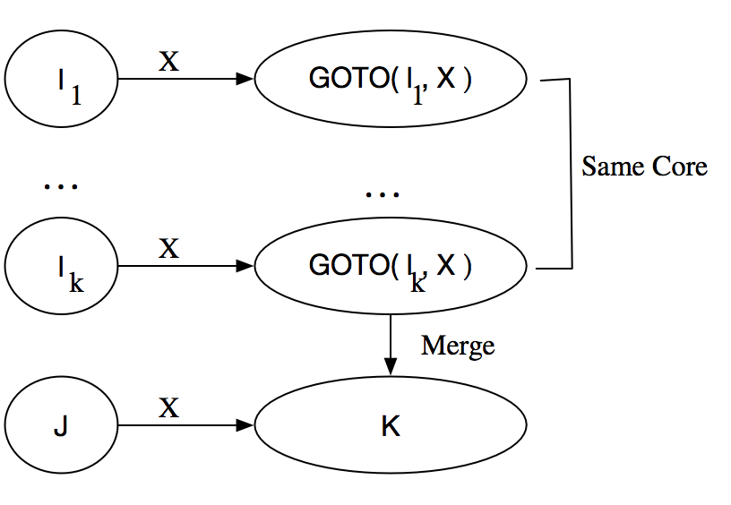
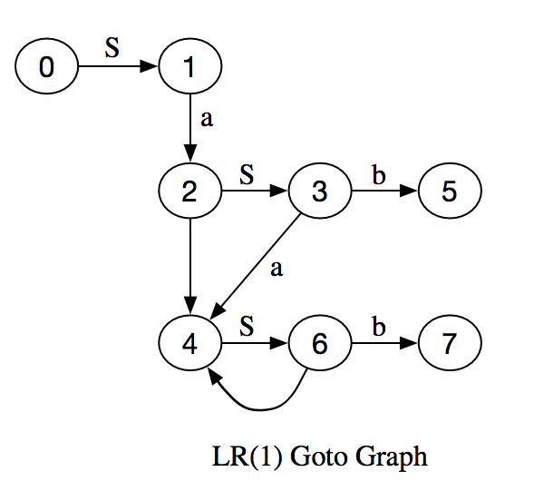
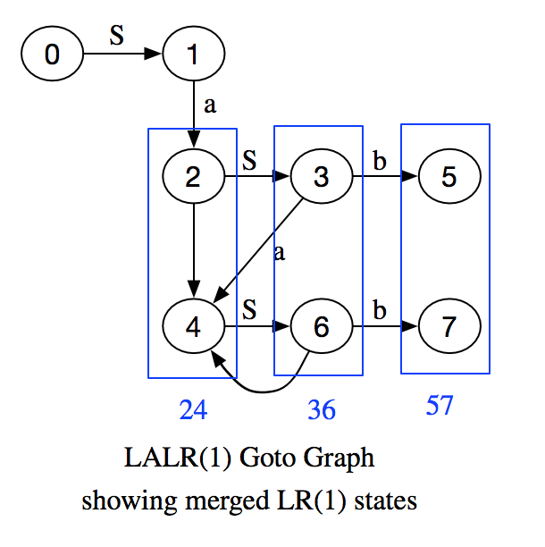

Introduction
This is intended to be a hyperfast review of the basic LR(k) and LALR(k) terminology and concepts; enough to be able to understand how a parser generator program works. To illustrate the concepts, I have written Lisp software for a LR(1) and LALR(1) parser generator and parser.
Given the tokens and productions of a grammar, there is an algorithm which can either generate a deterministic finite automaton (DFA) to parse the grammar efficiently or else determine our grammar is not LR(k)/LALR(k).
Each state in our DFA corresponds to a prefix of a possible derivation of our input string.
A state contains a set of items. Depending upon the next k symbols of lookahead, an item tells us to either
- Reduce a set of symbols after the prefix using one of the productions and goto the next state.
- Shift more symbols of input onto a stack and goto the next state.
We'll end up with a sequence of productions tracing out the derivation of the sentence in reverse, or stop in an error state.
Terminology
A formal grammar is defined to be the tuple $G = \left( N, \Sigma, P, S \right)$ where N = finite set of non-terminal symbols, $\Sigma$ = finite set of terminal symbols, P = set of productions of the form $\alpha \rightarrow \beta$, S = non-terminal start symbol. The collection $\{ a, b, c, d, \ldots, 0, 1, \ldots, 9 \}$ denote terminals, while $\{ u, v, w, x, y, z \}$ are strings of terminals. $\{ A, B, C, D, S, \ldots \}$ denote non-terminals, $\{ U, V, W, X, Y, Z \}$ are either terminal or non-terminal symbols. $\{ \alpha, \beta, \gamma, \delta, \ldots \}$ are strings of either. $| x |$ is the length of the string x. $\epsilon$ is the empty string. $\Rightarrow$ means directly derives, i.e. if we have a production $\beta \rightarrow \delta$ then $\alpha \beta \gamma \Rightarrow \alpha \delta \gamma$ and $\stackrel{*}{\Rightarrow}$ means transitive and reflexive closure of derives. In derivations, rm denotes rightmost derivation, which means expand non-terminal symbols starting with those on the right. lm denotes leftmost derivation.
A language L is context free if all productions $\alpha \rightarrow \beta$, satisfy $| \alpha | = 1$, i.e. the left hand side of a production is a single non-terminal, i.e. a production is independent of the symbols surrounding it (its context).
The concatenation of two sets of strings is defined by
$$L_1 \oplus_k L_2 = \{ w | \exists x \in L_1, y \in L_2$$ such that $${\LARGE \{ } \begin{array}{rl} w = xy \text{ if } |xy| \le k \text{ else } \\ w = \text{ first k symbols of xy } \end{array} $$
First k Derived Terminals
The first k terminals derived from the string $\alpha$ is defined by $FIRST_k \left( \alpha \right) = \{ x | \alpha \mathrel{ \substack{* \\ \Rightarrow \\ lm} } x \beta \: and \: |x| = k \: or \: \alpha \mathrel{ \substack{* \\ \Rightarrow \\ lm} } x \: and \: |x| \lt k \} $
First, define $FIRST_k()$ for any string of terminals and non-terminals, $\beta = X_1 \ldots X_n \in (N \bigcup \Sigma)^*$ recursively by string concatenation,
$FIRST_k( \beta ) = FIRST_k( X_1 ) \oplus_k \ldots \oplus_k FIRST_k( X_n )$
For terminals, define FIRST to be the terminal itself,
$FIRST_k( a ) = \{ a \} \quad \forall a \in \Sigma \cup \{ \epsilon \}$
It remains to compute FIRST for all non-terminals, $FIRST_k( X ) \quad \forall X \in N$
We do this iteratively. We define the function F() which will approximate FIRST. For terminals, define $F_i( a ) = \{ a\} \quad \forall a \in \Sigma, \quad \forall i \ge 0$
For non-terminals, we define the zeroth approximation to FIRST by $$F_0( A ) = \{ x | x \in \Sigma^{*k},$$ $$A \rightarrow x \: \alpha \in P, \: |x| = k \text{ or } |x| \lt k \text{ and } \alpha = \epsilon \}$$
Then for all non-terminals A simultaneously, we iterate the formula, $$F_{i+1}( A ) = F_i( A ) \cup \{ x | A \rightarrow Y_1 \ldots Y_n \in P$$ and $$x \in F_i( Y_1 ) \oplus_k \ldots \oplus_k F_i( Y_n ) \} \quad i \ge 0$$
Eventually,
$F_i( A ) \subset F_{i+1}( A ) \subset \ldots \subset F_l( A ) = F_{l+1}( A ) \quad \forall A \in N$
at which point we terminate and say,
$FIRST_k( A ) = F_l( A ) \quad \forall A \in N$
The epsilon-free first k derived symbols, $EFF_k()$, are found by computing FIRST as above, but tagging all symbols which are derived using epsilon productions of the form, $A \rightarrow \epsilon$ as non-epsilon free, and keeping only the epsilon-free derived terminals.
LR(k) Definition
G is LR(k) iff
- $S' \underset{rm}{\overset{*}{\Rightarrow}} \alpha A w \underset{rm}{\Rightarrow} \alpha \beta w$
- $S' \underset{rm}{\overset{*}{\Rightarrow}} \gamma B x \underset{rm}{\Rightarrow} \alpha \beta y$
- $FIRST_k( w ) = FIRST_k( y )$
implies $\alpha = \gamma$, $A = B$ and $x = y$
That is, if we see a string of the form $\alpha \beta w$ and we are given only $FIRST_k( w )$, we must have used the unique production $A \rightarrow \beta$ and we must have had the same unique prefix $\alpha \beta$.
Or equivalently, knowing the prefix $\alpha \beta$ and only the k terminal symbol lookahead, we can locate
- The right end of the handle.
- The left end of the handle.
- Which reduction to make.
Valid Items
An item $[ A \rightarrow \beta_1 \bullet \beta_2, u]$ is valid for viable prefix $\gamma = \alpha \beta_1$ if $\exists S \underset{rm}{\overset{*}{\Rightarrow}} \alpha \beta_1 \beta_2 w \ni u = FIRST_k( w )$ That is, $\alpha A w \Rightarrow \alpha \beta_1 \beta_2 w$ is a derivation consistent with what we've seen so far in parsing (the prefix) and consistent with the lookahead. An item with nothing after the dot indicates a reduction by a production is OK at this stage, but an item with a symbol after the dot indicates we should shift more symbols before making any reductions.
LR(k) Equivalent Definition
A language $G$ is $LR(k)$ iff for a viable prefix $\gamma = \alpha \beta$ given $[ A \rightarrow \beta \bullet , u ]$ is valid for $\gamma$ and there is no other valid item $[ A_1 \rightarrow \beta_1 \bullet \beta_2, \nu ]$ valid for $\gamma$ with $u \in EFF_k( \beta_2 \nu )$
(We may have $\beta_2 = \epsilon$ ) In other words, the sets of items cannot contain any shift-reduce or reduce-reduce conflicts.
Closure on Sets of Items
Define an operator $\delta$ which generates the set of items having the same prefix consistent with the lookahead:
$\delta \{ [ A \rightarrow \alpha \bullet X \beta, u ] \} =$
- $\varnothing \text{ if } X \in \Sigma \text{ or } \neg \exists X \beta$
- Otherwise, $\{ [X \rightarrow \bullet \delta, x ] | x \in FIRST_k( \beta u ) \text{ and } X \rightarrow \delta \in P \}$
Denote the transitive closure of this operator as, $CLOSURE( \{ [ A \rightarrow \alpha \bullet X \beta, u ] \} )$
The reason for the closure is this: if an item $[ A \rightarrow \alpha \bullet X \beta, u ]$ is valid for viable prefix $\gamma = \delta \alpha$ and lookahead $u = FIRST_k( w )$
There is a derivation, $\exists S \underset{ rm }{ \overset{ * }{ \Rightarrow } } \delta A w \Rightarrow \delta \alpha X \beta w$ Then a production of the form $X \rightarrow \eta$ implies the derivation $S \underset{ rm }{ \overset{ * }{ \Rightarrow } } \delta A w \Rightarrow \delta \alpha \eta \beta w$ which means the new item $[X \rightarrow \bullet \eta, \nu]$ is also valid for the same viable prefix $\gamma = \delta \alpha$ where $\nu = FIRST_k( \beta w )$
GOTO on Sets of Items
Define the GOTO on a set of items $A$ as $$GOTO( A, X ) = CLOSURE( \{ [ A \rightarrow \alpha X \bullet \beta, u ] \} )$$ where $$[A \rightarrow \alpha \bullet X \beta, u] \in A$$
Sets of Items Construction
We can construct the set of items valid for each viable prefix iteratively. The set of items valid for viable prefix $X_1 \ldots X_i$ is $V_k( X_1 \ldots X_i ) = GOTO( V_k( X_1 \ldots X_{i-1}), X_i)$ where the initial state is $V( \epsilon ) = CLOSURE( \{ [S' \rightarrow \bullet S, \epsilon ] \} )$ This gives us a GOTO graph having the sets of items as nodes, the GOTO's on symbols as transitions between states, and the viable prefix for a set of states as the path from the initial state to that node.
The algorithm is as follows: Begin with $C = CLOSURE[S' \rightarrow \bullet S, \epsilon]$
Repeat for each item $I \in C$ for each $X \in G$ if $GOTO( I, X ) \neq \varnothing$ and $GOTO( I, X ) \not\in C$ then $C = C \cup GOTO( I, X )$ until no more items can be added to $C$.

LR(k) Parsing Table Generation
We generate ACTION and GOTO tables which will be used by our finite state automaton (FSA) for parsing.
Let $s_m = \text{ arbitrary state label for a set of items }$ and $u = \text{ k symbol lookahead }$
Generate the ACTION table as $ACTION[ s_m, u ] =$
- $\text{ shift s } \text{ if } [A \rightarrow \beta_1 \bullet \beta_2, \nu] \in s_m, \beta_2 \neq \epsilon, u \in EFF_k( \beta_2, \nu )$ where $s = GOTO[s_m, u]$
- $\text{ reduce k } \text{ if } [A \rightarrow \beta \bullet , u ] \in s_m \text{ where } A \rightarrow \beta \in P$ is the $k^{th}$ labelled production.
- $\text{ accept } \text{ if } [S' \rightarrow S \bullet , \epsilon ] \in s_m$
- $\text{ error } \text{ Otherwise }$
Define the GOTO table as $GOTO[ s_m, X_i ] = GOTO( A_{s_m}, X_i )$
LR(k) Parsing Algorithm
We start in the initial state, $( s_0 | a_i a_{i+1} \ldots a_n \$)$
where $s_0 = V( \epsilon ) = CLOSURE( [S' \rightarrow \bullet S, \epsilon])$
Then, starting from a state consisting of a parse stack on the left, and an input stack on the right of remaining tokens to be parsed,
$(s_0 X_1 s_1 \ldots X_m s_m | a_i a_{i+1} \ldots a_n \$)$
We define the transition functions of the DFA on as follows:
$ACTION[s_m, a_i \ldots a_{i+k-1}] = shift \: s$
push the new symbol and new state and transition to:
$(s_0 X_1 s_1 \ldots X_m s_m a_i s | a_{i+1} \ldots a_n \$)$
where $s = GOTO( s_m, a_i \ldots a_{i+k-1}]$
If $ACTION[s_m, a_i \ldots a_{i+k-1}] = reduce \quad A \rightarrow \beta$
transition from
$(s_0 X_1 s_1 \ldots X_{m-r} s_{m-r} X_{m-r+1} s_{m-r+1} \ldots X_m s_m | a_i a_{i+1} \ldots a_n \$)$
where $\beta = X_{m-r+1} \ldots X_m$ to the state:
$(s_0 X_1 s_1 \ldots X_{m-r} s_{m-r} A s | a_i a_{i+1} \ldots a_n \$)$
where $r = | \beta |$ and $s = GOTO[ s_{m-r}, A ]$
If $ACTION[ s_m, a_i \ldots a_{i+k-1} ] = accept$
Halt and accept the input with no error.
If $ACTION[ s_m, a_i \ldots a_{i+k-1} ] = error$
Call $ErrorHandler[ s_m, a_i \ldots a_{i+k-1}]$
where the viable prefix is $X_1 \ldots X_m$ and the error tokens are $a_i \ldots a_{i+k-1}$
Ambiguous Grammars
If the grammar is ambiguous, we don't have to rewrite the grammar to avoid it; many times we can resolve the conflicts in many cases by adding precedence and associativity rules to productions and input symbols. YACC does this.
If a state contains items having a shift/reduce conflict,
$ACTION[s_m, a_i \ldots a_{i+k-1}] = reduce \quad A \rightarrow \beta$
$ACTION[s_m, a_i \ldots a_{i+k-1}] = shift \quad s$
we reduce if the precedence of the production $A \rightarrow \beta$ is higher than the precedence of the lookahead in the input, $a_i \ldots a_{i+k-1}$ The default precedence of the production is the precedence of the rightmost terminal of $\beta$ Otherwise, we can set it to be the precedence of any symbol which gives a correct parse.
If there is a tie in precedence, we reduce if the production is left associative and shift if the production is right associative. Nonassociative breaks ties by declaring error.
If there is a reduce/reduce conflict, we reduce by the earlier listed production in the list.
Error Recovery
We can add error productions to the language of the form, $A \rightarrow \text{ error } \alpha$ where A is a major non-terminal, and $a = \epsilon$ is allowed.
When the parser gets into an error state, it pops the parse stack until it finds a state containing the item $A \rightarrow \bullet \text{ error } \alpha$ shifts the imaginary token, $\text{ error }$ then discards input symbols until it sees lookahead $\alpha$. Then the parser performs a reduction on $A$ and calls an error routine associated with the error production. If $\alpha = \epsilon$ the reduction happens immediately.
Generating LALR(1) Sets Of Items
First a definition,
The core of an item $[A \rightarrow \beta_1 \bullet \beta_2, u]$ is $[A \rightarrow \beta_1 \bullet \beta_2]$.
If we can merge the cores of the sets of items in the $LR( k )$ goto graph without generating conflicts to give a much smaller graph, the grammar is of type $LALR( k )$.
(1) Construct $LR(1)$ sets of items $I$:
$C = \{ I_0, \ldots, I_n \}$
(2) For each core in C find all sets of items having that core and replace these sets by their union (remove duplicate cores and merge lookaheads).
$C' = \{ J_0, \ldots, J_n \}$
(3) Create the action table as before. If there are any conflicts, the language is not LALR(1) and we exit.
(4) Otherwise, construct the goto table as follows.
For a merged set of items, $J = I_1 \cup I_2 \ldots \cup I_k$ the cores of $goto( I_1, X ) \ldots goto(I_k, X )$ are identical also since $I_1 \ldots I_k$ have the same cores.
Now let $K = GOTO( I_1, X ) \cup \ldots \cup GOTO( I_k, X )$ then $goto( J, K ) = K$

And our LALR(1) collection of items is done. If an LR(1) parser has detected an error on the input, the corresponding LALR(1) parser may do additional reductions. However it will not shift the error symbol onto the stack, and will declare error before the next shift.
We can't create any new shift/reduce conflicts by merging cores. Suppose we did create a new shift/reduce conflict by merging sets of items:
$[A \rightarrow \alpha \bullet , a] \quad (reduce \quad A \rightarrow \alpha)$
and
$[B \rightarrow \beta \bullet a \gamma, b] \quad (shift \quad a)$
Since cores were the same before the merge, some item must have had
$[A \rightarrow \alpha \bullet , a] \quad (reduce \quad A \rightarrow \alpha)$
and
$[B \rightarrow \beta \bullet a \gamma, c] \quad (shift \quad a)$
for some lookahead c. But this is an LR(1) shift/reduce conflict, a contradiction. However, we can create a reduce/reduce conflict by merging cores.
Example: Generating LR(1) Sets Of Items and Parsing Sentences
Our sample grammar with lookahead k = 1 has two productions,
- S → SaSb
- S → ε
First compute FIRST and epsilon-free FIRST of all the token symbols,
For all i, we have for the terminals, Fi(ε) = {ε}, Fi(a) = {a}, Fi(b) = {b}.
For the non-terminal S, F0(S) = {ε}, since that's the only production which derives a terminal symbol on the left. Now we iterate
F1(S) = {ε} U { F0(S)+1F0(a)+1 F0(S)+1 F0(b), F0(ε) } = { {ε}+1{a}+1..., ε } = {ε,a}
F2(S) = {ε} U { F1(S)+1F1(a)+1 F1(S)+1 F1(b), F1(ε) } = { {ε,a}+1{a}+1..., ε } = {ε,a}
The set doesn't change anymore, so we stop and declare, FIRST(S) = F2(S) = {ε,a}
When we compute EFF, we use a similar algorithm, but any derivations with leading epsilons were disallowed, so EFF(ε) = EFF(S) = {}.
| Symbol | FIRST1() | EFF1() |
|---|---|---|
| ε | {ε} | {} |
| a | {a} | {a} |
| b | {b} | {b} |
| S | {ε, a} | {} |
Now we compute the sets of LR(1) items using GOTO and CLOSURE operations.
| State | GOTO() from state | Viable Prefix | Kernel | Closure | |||||||||||||||
|---|---|---|---|---|---|---|---|---|---|---|---|---|---|---|---|---|---|---|---|
| 0 | - | ε | 1. [S' →.S,ε] |
|
|||||||||||||||
| 1 | State 0 GOTO(S) | S |
|
|
|||||||||||||||
| 2 | State 1 GOTO(a) | Sa |
|
|
|||||||||||||||
| 3 | State 2 GOTO(S) | SaS |
|
|
|||||||||||||||
| 4 | State 6 GOTO(a), State 3 GOTO(a) | SaSa |
|
|
|||||||||||||||
| 5 | State 3 GOTO(b) | SaSab |
|
|
|||||||||||||||
| 6 | State 4 GOTO(S) | SaSab |
|
|
|||||||||||||||
| 7 | State 6 GOTO(b) | SaSaSb |
|
|

Let's tabulate the GOTO's on the states and symbols, which we'll need to calculate the state after a shift (for GOTO's on terminal symbols) and also the state after a reduce (for GOTO's on non-terminal symbols).
| State | ON symbol GOTO state | |||
|---|---|---|---|---|
| S | e | a | b | |
| 0 | 1 | - | - | - |
| 1 | - | - | 2 | - |
| 2 | 3 | - | - | - |
| 3 | - | - | 4 | 5 |
| 4 | 6 | - | - | - |
| 5 | - | - | - | - |
| 6 | - | - | 4 | 7 |
| 7 | - | - | - | - |
Now we compute the ACTION tables by looking at the types of items. If the item has nothing after the dot, it's a reduction provided we see the item's lookahead. Otherwise, we compute u = EFF() of all the symbols after the item's dot including the item's k-symbol lookahead. If we see the u in the input, we call for a shift, and a goto the next state on u.
| State | Items | EFF Lookahead (for a shift only) | Lookahead Symbol/Action |
|---|---|---|---|
| 0 |
|
|
|
| 1 |
|
|
|
| 2 |
|
|
|
| 3 |
|
|
|
| 4 |
|
|
|
| 5 |
|
|
|
| 6 |
|
|
|
| 7 |
|
|
|
Collecting together the shift and reduce actions for each state, and the goto on each non-terminal gives us the ACTION and GOTO tables: the heart of the parser. Error states are easily associated with error messages.
| State | ACTION | GOTO | ||
|---|---|---|---|---|
| ε | a | b | S | |
| 0 | r2 | r2 | error - b not expected | 1 |
| 1 | accept | s2 | error - b not expected | error |
| 2 | error - expecting a or b | r2 | r2 | 3 |
| 3 | error - expecting a or b | s4 | s5 | error |
| 4 | error - expecting a or b | r2 | r2 | 6 |
| 5 | r1 | r1 | error - b not expected | error |
| 6 | error - premature end of input | s4 | s7 | error |
| 7 | error | r1 | r1 | error |
| Parse Stack | Action |
|---|---|
| (0 | ε a a b b) | r2: S → ε |
| (0 S 1 | a a b b) | s2: |
| (0 S 1 a 2 | a b b) | r2: S → ε |
| (0 S 1 a 2 S 3 | a b b) | s4 |
| (0 S 1 a 2 S 3 a 4 | b b) | r2: S → ε |
| (0 S 1 a 2 S 3 a 4 S 6 | b b) | s7 |
| (0 S 1 a 2 S 3 a 4 S 6 b 7 | b) | r1: S → SaSb |
| (0 S 1 a 2 S 3 | b) | s5 |
| (0 S 1 a 2 S 3 b 5| ) | r1: S → SaSb |
| (0 S 1| ) | accept: S' → S |
We've just traced out a rightmost derivation in reverse:
S' → S → SaSb → SaSaSbb → SaSabb → Saabb → aabb
| Parse Stack | Action |
|---|---|
| (0 | a a b) | r2: S → ε |
| (0 S 1 | a a b) | s2: |
| (0 S 1 a 2 | a b) | r2: S → ε |
| (0 S 1 a 2 S 3 | a b) | s4 |
| (0 S 1 a 2 S 3 a 4 | b) | r2: S → ε |
| (0 S 1 a 2 S 3 a 4 S 6 | b) | s7 |
| (0 S 1 a 2 S 3 a 4 S 6 b 7 | b) | error: Expecting a or b next in the derivation S'=>SaSaSb... |
Example: Generating LALR(1) Sets Of Items
Now we compute the sets of LALR(1) items by merging the cores of the LR(1) items above. New state numbers show which LR(1) states were merged. There are no reduce/reduce conflicts, and the parse tables become much smaller.

| State | GOTO From State | Viable Prefix | Items |
|---|---|---|---|
| 0 | - | ε |
|
| 1 | 0 GOTO(S) | S |
|
| 24 | 1 GOTO(a), 3 GOTO(a) | Sa |
|
| 36 | 24 GOTO(S) | SaS |
|
| 57 | 36 GOTO(b) | SaSb |
|
Collecting together the shift and reduce actions for each state, and the goto on each non-terminal gives us the ACTION and GOTO tables: the heart of the parser. Error states are easily associated with error messages.
| State | ACTION | GOTO | ||
|---|---|---|---|---|
| ε | a | b | S | |
| 0 | r2 | r2 | error - b not expected | 1 |
| 1 | accept | s24 | error - b not expected | error |
| 24 | error - expecting a or b | r2 | r2 | 36 |
| 36 | error - expecting a or b | s24 | s57 | error |
| 57 | r1 | r1 | r1 | error |
References
- A. V. Aho, R. Sethi, J. D. Ullman, COMPILERS, PRINCIPLES, TECHNIQUES AND TOOLS, Addison-Wesley, 1986 is the basic book.
- Principles of Compiler Design "The Dragon Book", A. V. Aho, J. D. Ullman, Addison-Wesley, 1979) is the older edition.
- THE THEORY OF PARSING, TRANSLATION AND COMPILING, VOLUME 1: PARSING, Alfred V. Aho and Jeffrey D. Ullman, Prentice-Hall, 1972. is additional theoretical reading (especially about first derived terminals).
- There is a good introductory compiler book online, Parsing Techniques - A Practical Guide Dick Grune and Ceriel J.H. Jacobs.